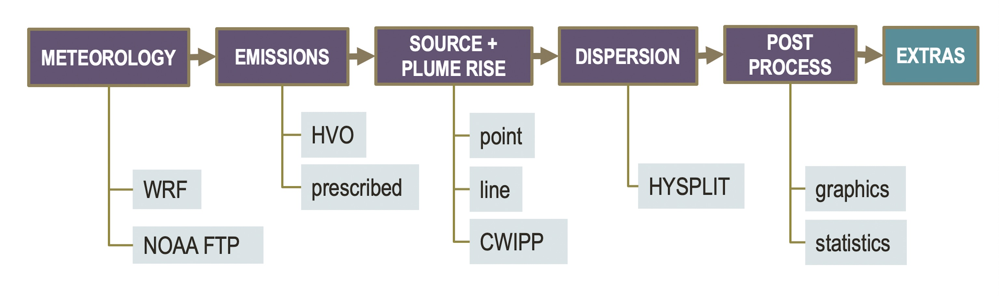

Modules¶
VogCast is a modular, Python-based air quality framework, that links together multiple state-of-art models and data streams to create regional forecasts of volcanic pollution. The main components, or modules, of the framework are shown in the top row of the figure below. Each module provides the user with multiple model and method options, allowing for various pathways to create a forecast.
Following Initial Setup, the workflow is controlled with a single centralized configuration file (see Workflow Configuration), which specifies the parameters of the simulation, including model options, emission source locations, and desired forecast output. The following subsections provide a general description of the individual modules of the framework.
Meteorology¶
VogCast system uses Weather Research and Forecasting Model (WRF) output as its default source of meteorological fields. Following initial domain configuration, the WRF runs are subsequently automated and controlled via the framework’s wrapper scripts within the Meteorology module. As an alternative, the framework provides an option for using archived gridded data in ARL format available from National Oceanic and Atmospheric Administration’s (NOAA) Operational Model Archive and Distribution System (NOMADS) or Air Resource Laboratory’s FTP server.
Emissions¶
The Emissions module is responsible for obtaining the most current SO2 emission rates available from the United States Geological Survey’s Hawaiian Volcano Observatory’s (HVO) API (HVO permission required). Optionally, these rates can be manually prescribed by the user.
Source/Plume Rise¶
Note
Details to be added.
Scientific background for Source/Plume-rise algorithms can be found [link to be added post-submission]
Dispersion¶
Dispersion and basic chemistry of volcanic emissions are modelled using the HYbrid Single-Particle Lagrangian Integrated Trajectory model (HYSPLIT). The simulations are performed in particle mode using a meteorology grid offset ensemble approach . SO2 and SO4 concentrations are output at an hourly interval on constant user-defined above-ground levels (AGL).
Post-Processing and Extras¶
The remaining modules of the VogCast framework offer several graphing (see Output Graphics) and post-processing options. Typical output includes plots of ensemble-averaged surface concentrations of SO2 and SO4. Optionally, surface maps of probability of exceedance (POE) can be generated, based on user-defined air quality thresholds for each pollutant (e.g. based on federal, state or local air quality standards).
Extras module offers the flexibility to support the incorporation of user-specific tasks directly into the main workflow. For example, UHM’s operational implementation of VogCast includes archiving, web-publishing and data distribution tasks. In addition, the module offers functionality to perform hazard assessment studies using historic model output data.